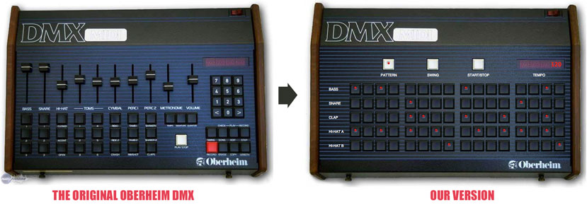

With the announcement of YP’s Hackathon XI, everyone starts thinking about what they can do to contribute. Both being musicians, June and I quickly realized we wanted to work on something music related that would motivate us and take advantage of our tech and music skills. Early on, we decided on doing a retro drum machine but really didn’t discuss more than that at the time. As the date drew closer we brought it up again and weren’t actually sure we could pull anything off.
On the day of the Hackathon was when we finally got into the details and decided to model our drum machine after the 1981 Oberheim DMX. We then brainstormed our strategy and tool sets, agreeing that we wouldn’t pressure ourselves to present unless something cool happened.
Knowing that June holds a strong talent for UI design and development, it was obvious that he would definitely cover that portion of the work in addition to contributing on the various inner workings. Being web developers we turned to HTML, CSS and Javascript to tackle the challenge.
First things first, we needed to be able to play audio from the browser so we turned to the Web Audio API. Next, we needed historically accurate drum sounds which were easy to come by from my personal collection. Then we needed a functioning UI. Working from old photos of the real instrument, June was able to design and implement a great looking and intuitive interface and wire up the basic sound engine to it.
At this point we realized we had actually created something interesting and set out to add the functional features that would make it legit. We started by adding pattern support so you can write a basic drum line. Then we followed that with a “Swing” function which adds a more human-like groove to the normally rigid timing (technical speaking we introduce some timing anomalies on every other note). Then we mapped keys to control start/stop, tempo changes and to trigger additional sounds for added giggles.

Needless to say, that’s when we decided we were going to present. In the end we landed a respectable 3rd place for “Coolest” hack!
Click here to see our work.
Being a hackathon, we wanted to do something challenging that utilized our skill sets yet unrelated to our daily role as YP engineers. This allowed us to think without constraints and exercise our imagination while still honing our craft. We found the overall experience to be incredibly exciting and inspiring.
This iconic instrument was everywhere in music beginning in the 80’s and still present and influential today. Paying an homage to the DMX is like hanging out backstage with your favorite artist at a concert. It just seemed like the right choice.
Technically, the original machine’s design is conceptually easy to understand which made it a good candidate. It contains a fixed set of drum sounds and songs are built using a “step sequencer,” which provided June with a good amount of UI direction. The key difference between our version and the original is that the UI exposes the sequencer and hides the more complex controls, making visual drum pattern creation a breeze.
Since we had so much fun on this project we have continued to develop more advanced features for it. We are thinking of additional projects for future hackathons that we hope will continue to inspire us (i.e., more music related projects).